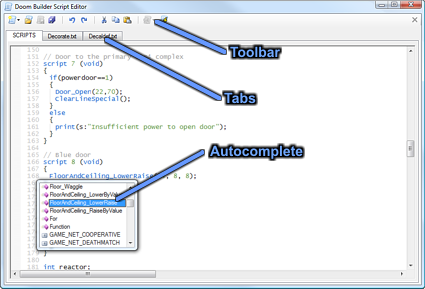

脚本编辑器是一个功能强大的文本编辑器，支持语法高亮和自动补全。它允许您同时打开并编辑多个文档，即使这些文档并不位于您的地图中。

每个打开的脚本都有自己的选项卡页面。当地图格式中存在文本 lump（例如 Hexen 格式中的 SCRIPTS lump）时，它们会被自动打开，且无法关闭。
| CTRL+O | 浏览并打开一个脚本文件。 |
| CTRL+S | 将当前脚本保存到文件。此操作对内部脚本 lump 无效，请保存地图以保存内部脚本 lump。 |
| CTRL+Space | 自动补全当前单词。如果有多个可能项，将弹出关键字列表供您选择。 |
| CTRL+F | 打开「查找和替换」对话框窗口。 |
| F3 | 查找通过「查找和替换」对话框最近一次搜索的下一个匹配项。 |
| F2 | 如果正在编辑的脚本类型支持，此操作会打开一个网站，其中包含光标所在当前关键字的信息。 |